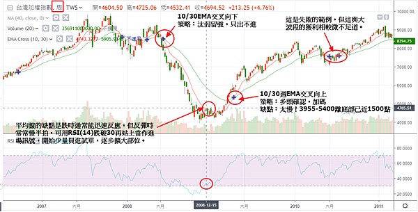
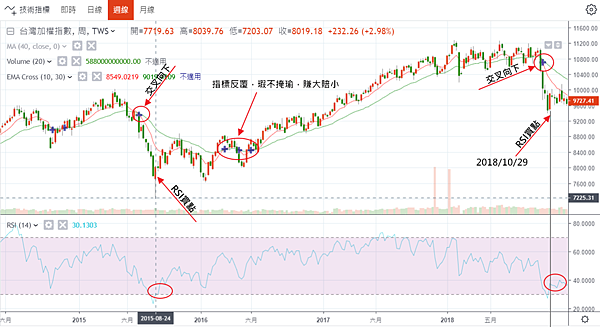
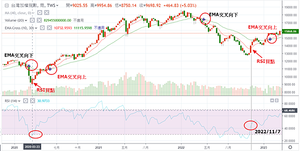
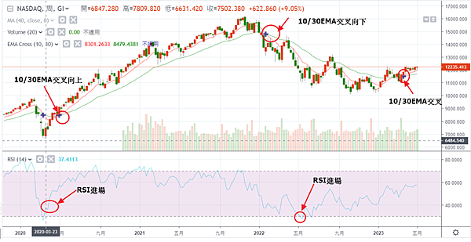
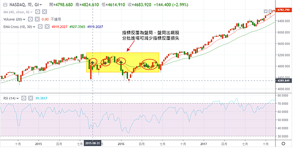
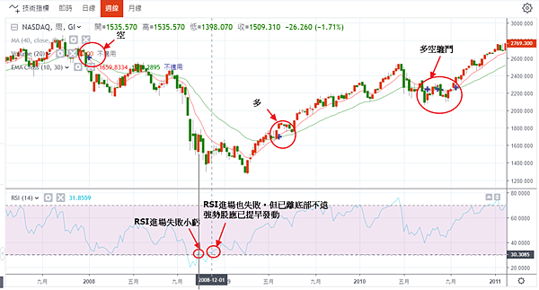
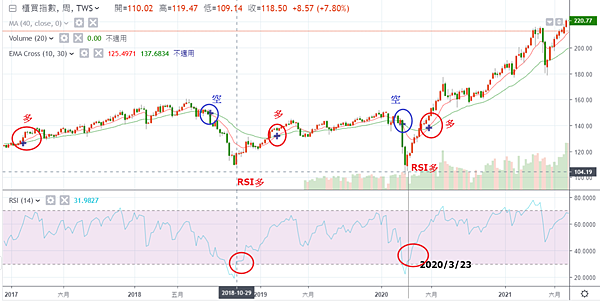
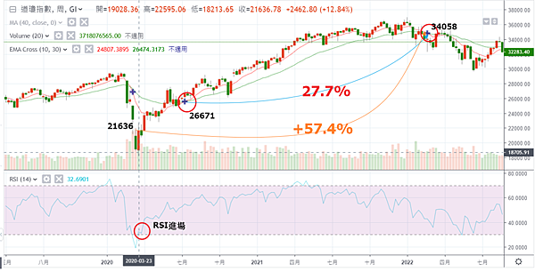

EMA1030交叉法
就像傳奇投資人班傑明．葛拉漢說的：「實現令人滿足的投資成果比多數人理解的更容易；但要實現卓越的成果，卻比表面上看起來難得多。」你要打敗80%的投資人，很簡單，買ETF就好了。
但就像我之前討論的，超級績效與平均績效的差異十萬八千里。要想比平均績效更進一步，只要用一個方法就可以了，就是：10/30週EMA交叉向上做多，交叉向下看空。再作一點改進如下圖，大概就可以贏過90%的投資人。
注意：宏觀多空愚痴妄，唯有一線透天機。預設立場而不尊重市場的人，即使曾為大師，到最後也難逃覆完命運。
規則
規則一：交叉向下
10/30週EMA交叉向下，開始汰弱留強，只出不進。
規則二：交叉向上
10/30週EMA交叉向上，多頭確認，可加大部位。
規則三：RSI買進輔助原則
當交叉向下時均線通常能靈敏反應跌勢(因為多頭力竭通常已經掙扎一段時間均線已收斂)，而交叉向上時均線反應較慢，比如已經離低點千點以上。此時可用其他指標輔助，即：當RSI(14)跌破30再度站上時，開始進場，少量試單，有賺錢則逐步擴大部位。
規則四：作空才作指數
因指數空間有限，建議加碼不要超過2次(即三刀流)，作多時也儘量操作個股，作空時因個股放空先天不利，這時才作指數，罔賺一點。
範例
台股2008

台股2015

台股2020

NAS2008

NAS2015
失敗範例

NAS2020

台灣櫃買2018

DOW2018
下圖顯示，加入RSI進場點，績效增加一倍。
